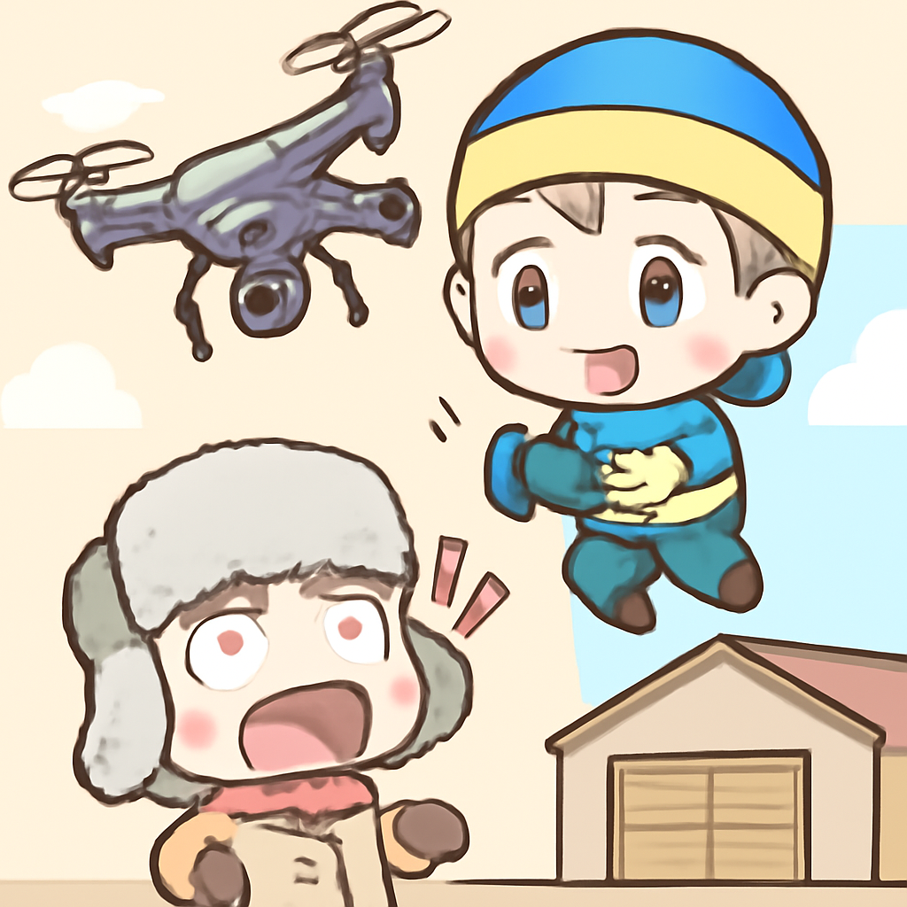
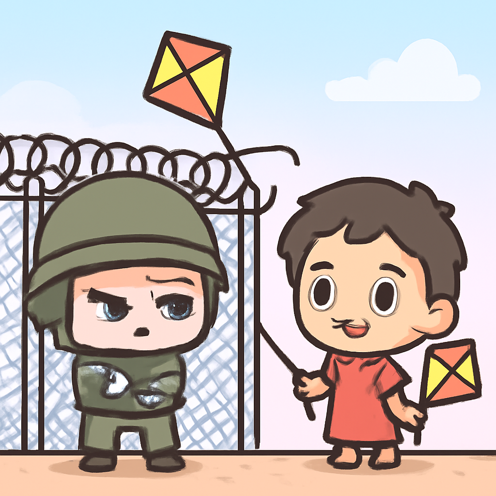

其一 · 伊朗 · 美國發動史上最大金融攻勢
美國財長宣布將切斷與伊朗的經濟關係。
在美國華府，財長史考特·貝森特表示，將對伊朗發動有史以來最大的金融攻勢，任何與伊朗有經濟合作的國家也將遭到孤立。這項措施可能會加劇中東地區的緊張局勢，全球市場也要保持警覺，否則可能會讓經濟出現意外的波動。
🔗 原始新聞 ↗
2026-08-25 · 以古觀今，以笑抗愁
美國財長宣布將切斷與伊朗的經濟關係。
在美國華府，財長史考特·貝森特表示，將對伊朗發動有史以來最大的金融攻勢，任何與伊朗有經濟合作的國家也將遭到孤立。這項措施可能會加劇中東地區的緊張局勢，全球市場也要保持警覺，否則可能會讓經濟出現意外的波動。
🔗 原始新聞 ↗
英國首相面對俄羅斯威脅仍承諾支持烏克蘭。
在英國，首相伯納姆在訪問烏克蘭時強調將繼續支持基輔，儘管俄羅斯對英國無人機的使用發出「可怕的威脅」。這一表態不僅展示了英國對烏克蘭的支持，也彰顯了在地緣政治緊張局勢下的立場，讓人不禁思考，這場對決是否會成為一場持久戰。
🔗 原始新聞 ↗
烏克蘭空襲波及俄羅斯第二大零售商。

在俄羅斯，知名零售商Ozon的多個倉庫遭到烏克蘭的空襲，損失不小。此次襲擊顯示出戰爭的影響已經擴展到商業領域，讓人懷疑在這場衝突中，民生與經濟活動能否繼續穩定運行。希望這不會讓網購變得更貴！
🔗 原始新聞 ↗
以色列警告將對從加薩飛來的風箏作出強烈回應。

在以色列，政府對從加薩飛來的風箏表示強烈不滿，並警告將採取「強硬」措施。這些風箏據說是加薩的孩子們放的，這讓人不禁想問：是風箏還是武器？這樣的局勢只會加劇地區的緊張，讓人擔心衝突會升級。
🔗 原始新聞 ↗
四人因疑似毒殺大象被捕，事件引發關注。
在肯尼亞，四名嫌疑人因涉嫌毒殺大象而被捕，當局正在調查這些大象是否因農藥而死。這一事件再次引發了對野生動物保護的討論，讓人不禁想起我們與自然和諧共存的重要性，畢竟，誰不喜歡大象呢？
🔗 原始新聞 ↗